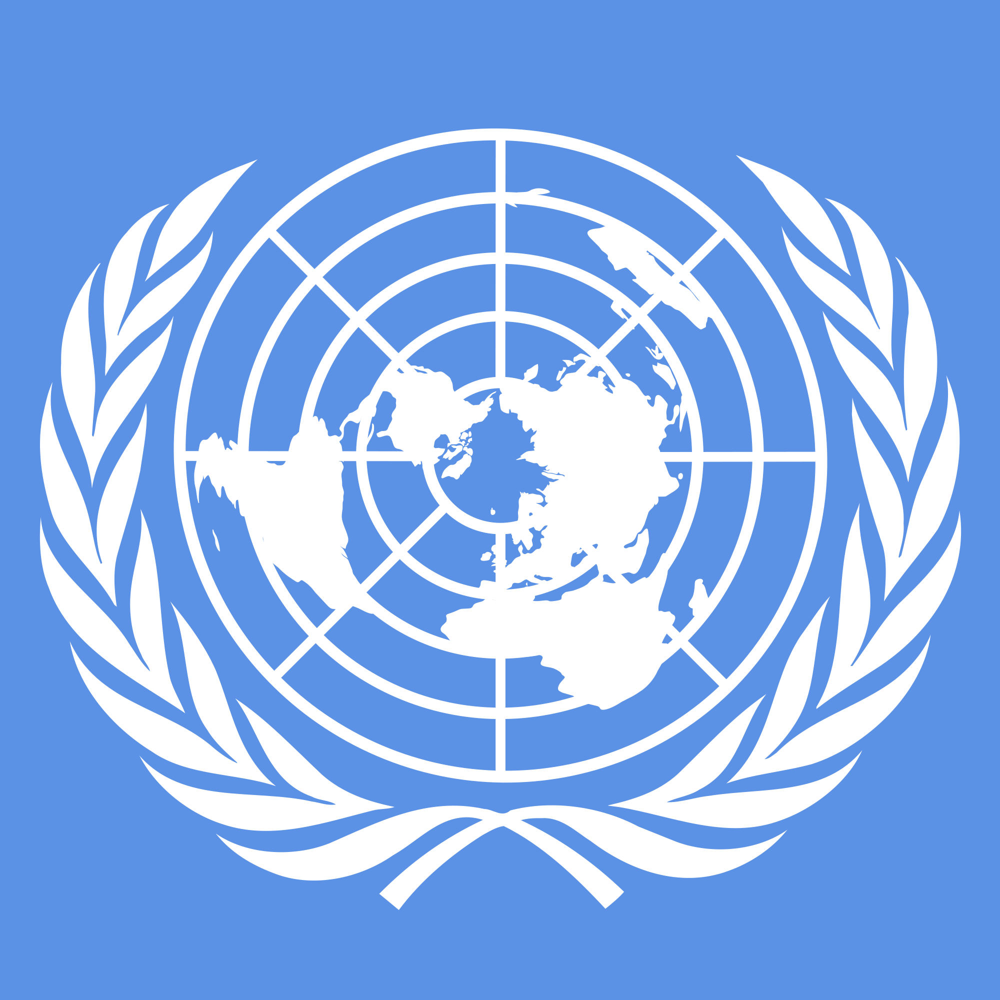

O que são os ODS
Os Objetivos de Desenvolvimento Sustentável são ao todo 17 metas estabelecidas pela ONU (Organização das Nações Unidas) e seus países membros no ano de 2015. Sua finalidade consiste, a partir da adoção desse modelo de seguimento, unir forças em favor da Agenda Mundial de Desenvolvimento Sustentável, que deve ser realizada até 2030.
 Consulte o site da ONU para saber mais sobre ODSODS 12
O Objetivo número 12 visa O Consumo e Produção responsáveis, assegurando padrões sustentáveis de vida, como por exemplo uma gestão diferente.

Consumo, Produção e o Desenvolvimento Sustentável
É fato que a produção e o consumo movimentam nossa economia, mas a forma como estamos realizando os mesmos prejudicam nosso planeta cada vez mais.
Consumir responsavelmente significa transformar a ação de consumo em uma prática permanente de cidadania.
Consumir responsavelmente significa transformar a ação de consumo em uma prática permanente de cidadania. Por exemplo, ao adquirir produtos eticamente corretos, cuja produção não tem como características a exploração de animais ou seres humanos, e não gera danos ao meio ambiente.
Já produzir responsavelmente, seria uma nova forma de fabricação com menor impacto ambiental e maior valor social.
Ao produzir e consumir de forma consciente e socioambiental, contribuímos para o não esgotamento dos recursos naturais e chegamos mais perto do tão falado Desenvolvimento Sustentável. Tal desenvolvimento seria capaz de suprir as necessidades da geração atual, sem comprometer o atendimento às necessidades das gerações posteriores.